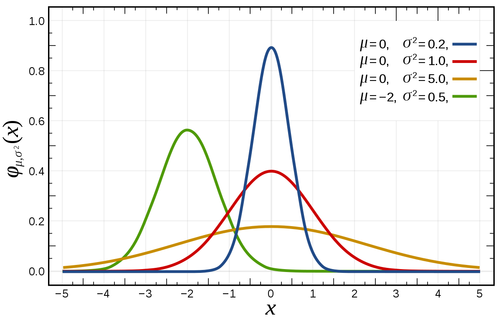

Kafka Connect in Practice
@edmondo1984
Edmondo Porcu
edmondo@credimi.com
A brief story of Kafka @ Credimi
We love managed services so...

Lesson learned...
The Kafka Ecosystem
- Stream processing
- Hadoop integration
- Management consoles
- Logging
- Metrics
- Developer tools
- Much more...

Kafka Distributions
- Cloudera
- Hortonworks
- IBM Message Hub
- Confluent
The Confluent Distribution
Schema registry
Rest proxy
Kafka Connect
Tooling matters!
Kafka Connect
Standardize interaction with external data-sources
A plugin-based architecture with classloader isolation
A clear and simple API
A look to the most important API concepts
- Connectors: basically a task factory
- Tasks: implementation of data copy <> kafka
- Workers: they run tasks
- Converters: byte arrays <> Kafka Connect API
- Transformers: configuration-based message transformations
Connectors: API, implementation and runtime
- org.apache.kafka.connect.connector.Connector
- io.confluent.connect.jdbc.JdbcSinkConnector
- org.apache.kafka.connect.runtime.Worker
Summary
Connector provides the task class and lifecycle hooks. Workers create task instances via reflectionTasks: API, implementation and runtime
- org.apache.kafka.connect.sink.SinkTask
- io.confluent.connect.jdbc.sink.JdbcSinkTask
- org.apache.kafka.connect.runtime.WorkerSinkTask
- org.apache.kafka.connect.source.SourceTask
- io.confluent.connect.jdbc.source.JdbcSourceTask
- org.apache.kafka.connect.runtime.WorkerSourceTask
Summary
Workers create instances of WorkersourceTask / WorkerSinkTask that wraps around SourceTask/SinkTask the offset management and metrics.A deeper look to the runtime
org.apache.kafka.connect.runtime.Worker
From the worker...
to the Herder
org.apache.kafka.connect.runtime.Herder
Distributed Herder / Standalone Herder
org.apache.kafka.connect.runtime.Connect
Kafka Connect and Consistency
Houston we have a problem
Single records -> multiple updates?
Looking for a solution
- Solution 1: multiple sinks on the same topic
- Solution 2: handling this challenge at the sink level
No consistency guarantees with solution 1
Deployment challenges
What if you need to do for many type of records? Conflicting classpath anyone?
Monolith anyones?
Teh ultimate strategy
Kafka Connect Distributed as a microservice